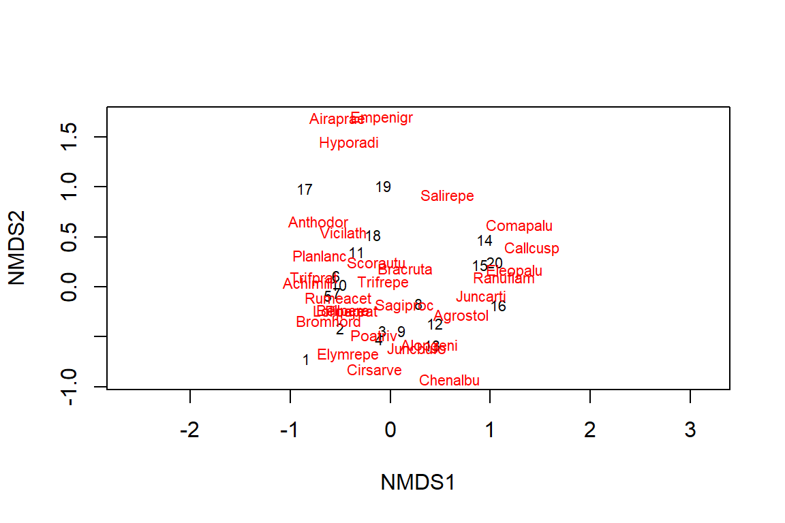
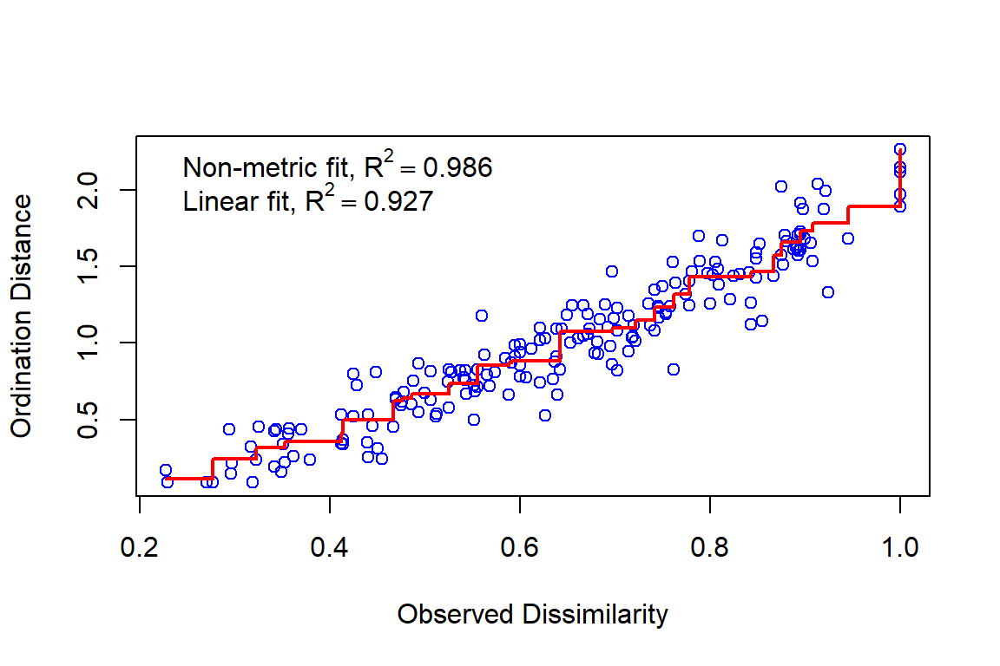
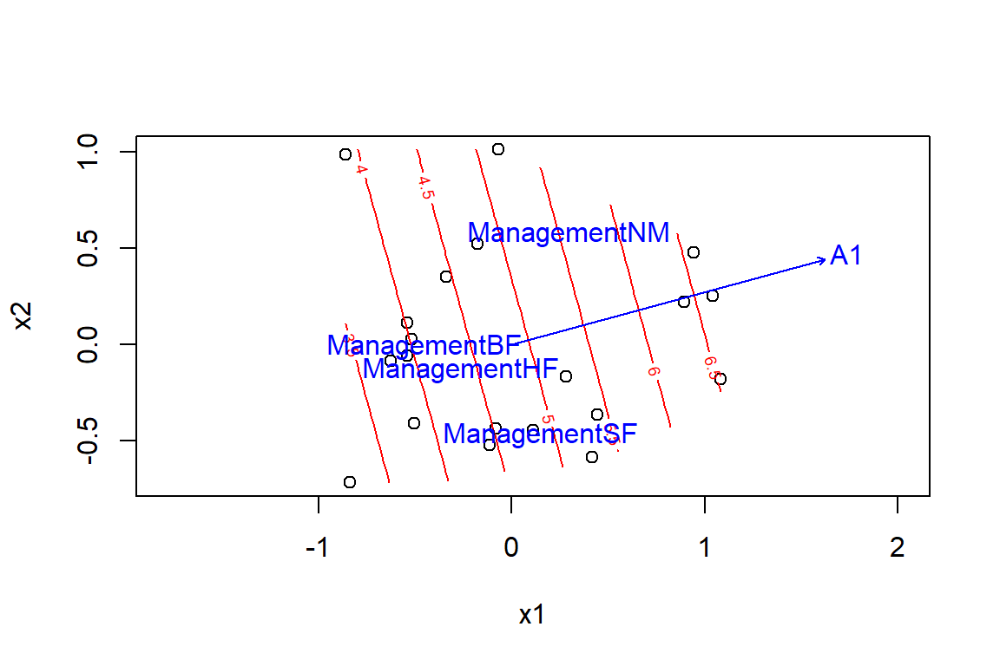
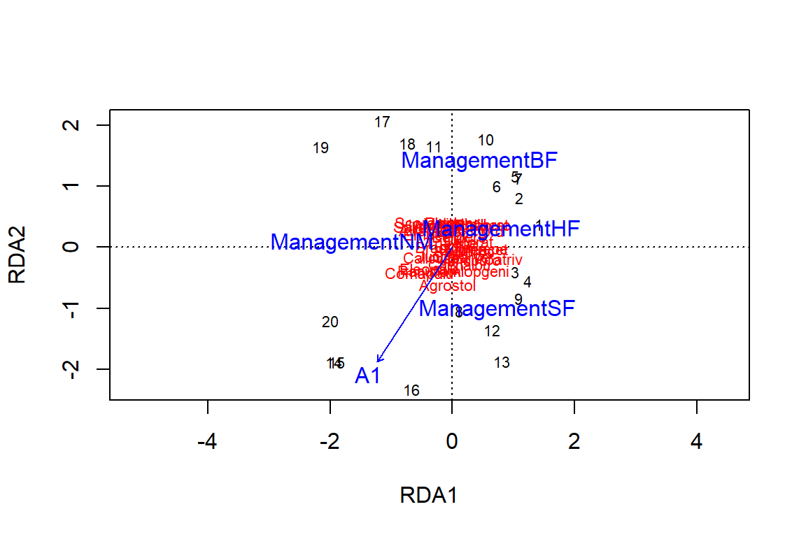
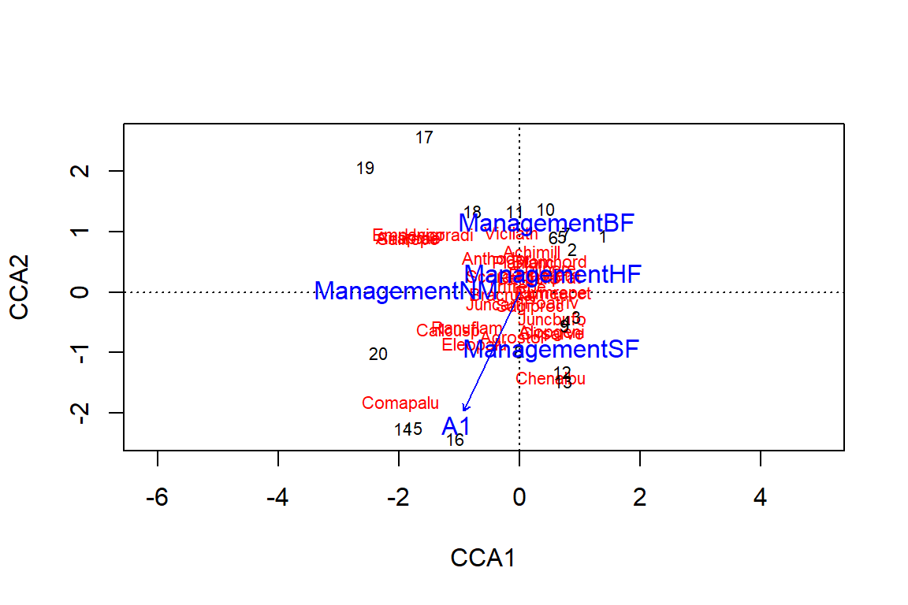
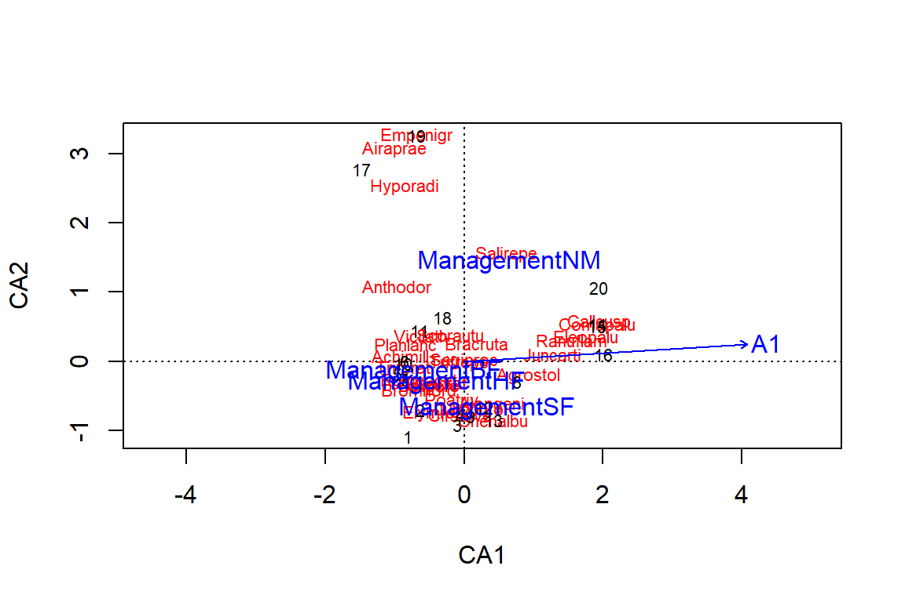

Analyses multivariées, Partie 2
10 décembre 2018
Objectifs
Appliquer des mesures de dissimilarité entre observations appropriées aux matrices de communauté écologique (abondance ou présence/absence).
Effectuer une ordination de données de communauté avec l’analyse de correspondance et le positionnement multidimensionnel non métrique (NMDS).
Superposer des gradients environnementaux aux résultats d’une ordination de communautés écologiques.
Utiliser l’ordination sous contraintes (analyse de redondance et analyse canonique de correspondance) afin de représenter la variation entre observations expliquée par des prédicteurs.
Données de présence ou d’abondance d’espèces
- Tableau indiquant l’abondance (nombre d’individus, % de recouvrement) de différentes espèces sur chacun des sites étudiés.
esp <- cbind(esp1 = c(2, 8, 0, 3), esp2 = c(1, 3, 0, 0), esp3 = c(0, 0, 1, 0))
rownames(esp) <- c("site1", "site2", "site3", "site4")
esp## esp1 esp2 esp3
## site1 2 1 0
## site2 8 3 0
## site3 0 0 1
## site4 3 0 0- Données binaires (0/1) si on a seulement l’information sur la présence.
Mesures de distance pour les données d’abondance
Rappel: distance euclidienne
- Somme du carré des écarts entre les deux observations pour chacune des variables:
\[ d_{ij} = \sqrt{\sum_{k = 1}^p (y_{ik} - y_{jk})^2} \]
- L’analyse en composantes principales vise notamment à bien représenter les distances euclidiennes entre les points.
Problèmes avec la distance euclidienne
- Dans notre exemple ci-dessus, la distance est de 6.3 entre les sites 1 et 2, 2.4 entre les sites 1 et 3.
dist(esp)## site1 site2 site3
## site2 6.324555
## site3 2.449490 8.602325
## site4 1.414214 5.830952 3.162278Pourtant, 1 et 2 partagent les mêmes espèces dans des proportions similaires tandis que 1 et 3 n’ont aucune espèce en commun.
Deux sites où une espèce est absente (0) seraient plus similaires que deux sites où l’espèce est présente à un niveau un peu différent.
Distance de Bray-Curtis
- Mesure de distance mieux adaptée aux données d’abondance:
\[ d_{ij(BC)} = \frac{\sum_{k=1}^p \left| y_{ik} - y_{jk} \right|}{y_{i \cdot} + y_{j \cdot}} \]
Valeur minimum de 0 lorsque l’abondance est la même pour chaque espèce et maximum de 1 lorsque les sites n’ont aucune espèce en commun.
Mesure indifférente aux doubles absences, mais sensible aux variation d’abondance totale entre deux sites.
Distance de Bray-Curtis
- La distance de Bray-Curtis et plusieurs autres peuvent être calculées avec la fonction
vegdistdu package vegan:
library(vegan)
vegdist(esp, method = "bray")## site1 site2 site3
## site2 0.5714286
## site3 1.0000000 1.0000000
## site4 0.3333333 0.5714286 1.0000000Distance entre profils
- Diviser les abondances par leur somme pour chaque site afin d’obtenir la composition ou profil du site.
\[ d_{ij(prof)} = \sqrt{\sum_{k = 1}^p \left( \frac{y_{ik}}{y_{i \cdot}} - \frac{y_{jk}}{y_{j \cdot}} \right)^2} \]
- \(y_{i \cdot}\) et \(y_{j \cdot}\) sont les abondances totales au site \(i\) et \(j\).
Distance de Hellinger
- Semblable à la distance entre profils, mais on prend la racine carrée des proportions:
\[ d_{ij(Hel)} = \sqrt{\sum_{k = 1}^p \left( \sqrt{\frac{y_{ik}}{y_{i \cdot}}} - \sqrt{\frac{y_{jk}}{y_{j \cdot}}} \right)^2} \]
Distance de Hellinger
- Calculée en transformant la matrice de données (avec
decostand) puis en calculant la distance euclidienne des données transformées.
esp_hel <- decostand(esp, method = "hellinger")
dist(esp_hel)## site1 site2 site3
## site2 0.06600048
## site3 1.41421356 1.41421356
## site4 0.60581089 0.54258112 1.41421356Valeur maximale de \(\sqrt{2}\) (1.414) si aucune espèce en commun.
Répond de façon plus linéaire aux changements d’abondance d’une espèce; après avoir appliqué la transformation d’Hellinger, on peut appliquer une analyse en composantes principales aux les données transformées.
Distance du \(\chi^2\)
- Semblable à la distance entre profils, mais la contribution d’une espèce \(k\) est divisée par la fraction \(p_k\) de l’ensemble des individus qui sont de cette espèce \(k\).
\[ d_{ij(\chi^2)} = \sqrt{\sum_{k = 1}^p \frac{1}{p_k} \left( \frac{y_{ik}}{y_{i \cdot}} - \frac{y_{jk}}{y_{j \cdot}} \right)^2} \]
Donne une plus grande importance aux espèces rares par rapport aux autres méthodes.
Valeur maximale de \(\sqrt{2N}\), où \(N\) est le total d’individus comptés.
Aussi calculée à partir d’une transformation réalisée par
decostand(..., method = "chi.square").
Quelle mesure choisir?
Toutes ces mesures peuvent servir à créer une matrice de distance pour une analyse de regroupement, en mettant un accent sur certaines différences plutôt que d’autres.
La distance de Bray-Curtis dépend des différences absolues d’abondance (nombre d’individus).
La distance de Hellinger dépend des différences relatives d’abondance (proportion d’individus) et accorde plus d’emphase aux espèces communes.
La distance du \(\chi^2\) dépend des différences relatives d’abondance et accorde une plus grande importance aux espèces rares.
Mesures de distance pour les données de présence
- Pour des données de présence-absence, on obtient le tableau suivant pour la comparaison de deux sites:
 .
.
- \(a\) représente le nombre d’espèces présentes aux deux sites, \(b\) le nombre d’espèces présentes au site 1 mais pas au site 2, et ainsi de suite.
Mesures de distance pour les données de présence
- L’indice de Jaccard mesure la similarité entre deux sites:
\[ J = \frac{a}{a + b + c} \]
- Prend des valeurs entre 0 (aucune espèce commune) et 1 (mêmes espèces).
- L’indice de Sorenson est défini de façon similaire, excepté que les espèces présentes aux deux sites sont comptées deux fois.
\[ S = \frac{2a}{2a + b + c} \]
Mesures de distance pour les données de présence
Une mesure de distance entre 0 et 1 peut être calculée comme 1 - similarité.
La fonction
vegdist(..., method = "jaccard")calcule la distance de Jaccard (\(1 - J\)).La valeur de \(1 - S\) correspond exactement à la distance de Bray-Curtis appliquée à une matrice binaire.
Ordination de matrices de communautés écologiques
Rappel: Tableaux de contingence
- Nombre d’observations (fréquence \(f\)) pour chaque combinaison de niveaux de deux variables catégorielles.
- Une matrice de communauté (abondance ou présence/absence) est un tableau de contingence pour les variables “site” et “espèce”.
- Si les deux variables sont indépendantes, la fréquence attendue pour une cellule \((i, j)\) est \(\hat{f_{ij}} = N_i N_j / N\).
- \(\chi_{ij}\): Résidu normalisé pour la cellule \((i, j)\). Le \(\chi^2\) est la somme des carrés des \(\chi_{ij}\).
\[\chi_{ij} = \frac{f_{ij} - \hat{f_{ij}}}{\sqrt{\hat{f_{ij}}}} \]
Analyse de correspondance
Ordination de la matrice des résidus \(\chi_{ij}\) d’un tableau de contingences.
Produit des composantes orthogonales en ordre décroissant de contribution au \(\chi^2\) total du tableau.
L’ACP fait une distinction entre observations et variables, mais l’analyse de correspondance est symétrique; elle ordonne simultanément les sites en fonction des espèces et vice versa.
L’analyse de correspondance donne une bonne représentation de la distance du \(\chi^2\) (donc elle accorde plus de poids aux espèces rares).
Analyse de correspondance dans R
- Tableau
duneinclus avec vegan: abondance de 30 espèces végétales sur 20 sites.
- L’analyse de correspondance est réalisée avec la fonction
ccade vegan.
data(dune)
ac_dune <- cca(dune)
# display = "reg" pour ne pas afficher toutes les coordonnées d'espèce et de site
summary(ac_dune, display = "reg") Analyse de correspondance dans R
##
## Call:
## cca(X = dune)
##
## Partitioning of scaled Chi-square:
## Inertia Proportion
## Total 2.115 1
## Unconstrained 2.115 1
##
## Eigenvalues, and their contribution to the scaled Chi-square
##
## Importance of components:
## CA1 CA2 CA3 CA4 CA5 CA6 CA7
## Eigenvalue 0.5360 0.4001 0.2598 0.17598 0.14476 0.10791 0.09247
## Proportion Explained 0.2534 0.1892 0.1228 0.08319 0.06844 0.05102 0.04372
## Cumulative Proportion 0.2534 0.4426 0.5654 0.64858 0.71702 0.76804 0.81175
## CA8 CA9 CA10 CA11 CA12 CA13
## Eigenvalue 0.08091 0.07332 0.05630 0.04826 0.04125 0.03523
## Proportion Explained 0.03825 0.03466 0.02661 0.02282 0.01950 0.01665
## Cumulative Proportion 0.85000 0.88467 0.91128 0.93410 0.95360 0.97025
## CA14 CA15 CA16 CA17 CA18
## Eigenvalue 0.020529 0.014911 0.009074 0.007938 0.007002
## Proportion Explained 0.009705 0.007049 0.004290 0.003753 0.003310
## Cumulative Proportion 0.979955 0.987004 0.991293 0.995046 0.998356
## CA19
## Eigenvalue 0.003477
## Proportion Explained 0.001644
## Cumulative Proportion 1.000000
##
## Scaling 2 for species and site scores
## * Species are scaled proportional to eigenvalues
## * Sites are unscaled: weighted dispersion equal on all dimensionsAnalyse de correspondance dans R
- La fonction
plotreprésente les espèces (en rouge) et les sites (en noir) sur les deux premiers axes.
plot(ac_dune)
Analyse de correspondance dans R
Les coordonnées des espèces et des sites peuvent être extraites avec la fonction
scores(ac_dune).Les gradients environnementaux entre sites peuvent apparaître comme des courbes sur le graphique d’ordination, dû à l’effet non-linéaire de l’environnement sur l’abondance d’une espèce (concept de niche écologique).
Des méthodes existent pour rectifier l’effet d’un seul gradient (detrended correspondance analaysis ou DCA), mais elles ne sont pas recommandées en général.
Positionnement multidimensionnel non-métrique (NMDS)
- Méthode d’ordination basée sur une matrice de distance entre les sites.
- Applique un algorithme itératif pour trouver une configuration de points dans un petit nombre de dimensions (habituellement 2) qui représente le mieux la distance entre les sites.
- Le stress donne la correspondance entre la distance originale \(d\) et la distance euclidienne dans l’espace réduit \(\hat{d}\):
\[ \sqrt{\frac{\sum_{(i, j)} (d_{ij} - \hat{d_{ij}})^2}{\sum_{(i, j)} d_{ij}^2}} \]
Positionnement multidimensionnel non-métrique (NMDS)
Avantage: Méthode flexible, fonctionne avec n’importe quelle mesure de distance.
Inconvénient: Algorithme heuristique peut ne pas converger, ou converger vers des solutions différentes selon les conditions de départ.
La fonction
metaMDSqui applique cette méthode répète l’algorithme plusieurs fois à partir de configurations initiales aléatoires.
Positionnement multidimensionnel non-métrique (NMDS)
md_dune <- metaMDS(dune, distance = "bray")La distance de Bray-Curtis est choisie par défaut par
metaMDS.Si l’algorithme ne converge pas, il faut augmenter le nombre d’essais (argument
tryde la fonction, 20 par défaut).Stress final de 0.118 ici. L’ajustement est excellent si <0.1 et mauvais si >0.2.
plotaffiche le résultat du positionnement en deux dimensions. Le NMDS ordonne les sites, puis les espèces sont placées en fonction de la position des sites où elles se trouvent.
Positionnement multidimensionnel non-métrique (NMDS)
plot(md_dune, type = "t") # type = "t" pour voir les noms des espèces et sites
Positionnement multidimensionnel non-métrique (NMDS)
# Correspondance entre la distance originale et la distance en 2D
stressplot(md_dune) 
Effet de prédicteurs sur une réponse multivariée
Variables environnementales associées aux sites
- Tableau de données
dune.envqui contient les valeurs de cinq variables associées aux 20 sites dedune.
data(dune.env)
head(dune.env)## A1 Moisture Management Use Manure
## 1 2.8 1 SF Haypastu 4
## 2 3.5 1 BF Haypastu 2
## 3 4.3 2 SF Haypastu 4
## 4 4.2 2 SF Haypastu 4
## 5 6.3 1 HF Hayfield 2
## 6 4.3 1 HF Haypastu 2- Une variable numérique (A1, épaisseur de la couche A1 du sol), deux variables catégorielles nominales (Management et Use) et deux variables catégorielles ordinales (Moisture et Manure).
Analyse de variance multivariée
- Fonction
adonisde vegan estime la fraction des distances entre sites expliquée par différents prédicteurs (distance de Bray-Curtis par défaut).
adonis(dune ~ A1 + Moisture + Management + Use + Manure, dune.env)##
## Call:
## adonis(formula = dune ~ A1 + Moisture + Management + Use + Manure, data = dune.env)
##
## Permutation: free
## Number of permutations: 999
##
## Terms added sequentially (first to last)
##
## Df SumsOfSqs MeanSqs F.Model R2 Pr(>F)
## A1 1 0.7230 0.72295 5.2038 0.16817 0.001 ***
## Moisture 3 1.1871 0.39569 2.8482 0.27613 0.004 **
## Management 3 0.9036 0.30121 2.1681 0.21019 0.034 *
## Use 2 0.0921 0.04606 0.3315 0.02143 0.980
## Manure 3 0.4208 0.14026 1.0096 0.09787 0.454
## Residuals 7 0.9725 0.13893 0.22621
## Total 19 4.2990 1.00000
## ---
## Signif. codes: 0 '***' 0.001 '**' 0.01 '*' 0.05 '.' 0.1 ' ' 1Analyse de variance multivariée
Cette méthode calcule une statistique \(F\) pour chaque variable indépendante.
La distribution de \(F\) sous l’hypothèse nulle n’est pas connue théoriquement, mais déterminée par 999 permutations aléatoires des valeurs de la variables (PERMANOVA).
Comme pour l’ANOVA univariée, cette méthode considère l’effet des variables dans l’ordre donné.
La PERMANOVA ne suppose pas l’égalité des variances, mais une différence significative peut représenter soit une différence de la composition “moyenne”, soit une différence dans la variance de la composition.
Superpositions des prédicteurs aux axes d’ordination
On réalise d’abord une ordination de la réponse, puis on corrèle les variables explicatives aux axes de l’ordination.
Si les composantes principales sont orthogonales (ACP ou AC, mais pas NMDS), on peut effectuer une régression séparée de chaque composante en fonction des prédicteurs.
On peut aussi estimer simultanément la corrélation entre des variables explicatives et chacun des axes: fonction
envfitde vegan.
Superpositions des prédicteurs aux axes d’ordination
envf <- envfit(md_dune, select(dune.env, A1, Management))
envf##
## ***VECTORS
##
## NMDS1 NMDS2 r2 Pr(>r)
## A1 0.96473 0.26324 0.3649 0.017 *
## ---
## Signif. codes: 0 '***' 0.001 '**' 0.01 '*' 0.05 '.' 0.1 ' ' 1
## Permutation: free
## Number of permutations: 999
##
## ***FACTORS:
##
## Centroids:
## NMDS1 NMDS2
## ManagementBF -0.4534 -0.0102
## ManagementHF -0.2636 -0.1282
## ManagementNM 0.2957 0.5790
## ManagementSF 0.1506 -0.4670
##
## Goodness of fit:
## r2 Pr(>r)
## Management 0.4134 0.005 **
## ---
## Signif. codes: 0 '***' 0.001 '**' 0.01 '*' 0.05 '.' 0.1 ' ' 1
## Permutation: free
## Number of permutations: 999Superpositions des prédicteurs aux axes d’ordination
Pour A1, le résultat indique la magnitude et la direction de l’effet d’une augmentation de cette variable sur les deux axes du NMDS (donc un vecteur).
Pour Management, le résultat indique la position moyenne (centroïde) des sites de chaque catégorie.
\(r^2\) est la portion de la variance sur les deux axes expliquée par chaque variable. Les valeurs \(p\) sont déterminées par permutation.
Les valeurs \(p\) et les \(r^2\) diffèrent de la PERMANOVA (données originales vs. ordination).
Superpositions des prédicteurs aux axes d’ordination
plot(md_dune)
plot(envf)
Superposition d’une surface (gradient non-linéaire)
ords <- ordisurf(md_dune, dune.env$A1)plot(ords)
plot(envf)
Ordination sous contraintes
Les méthodes d’ordination vues jusqu’à maintenant sont sans contrainte; elles structurent la réponse multivariée sans référence à des variables explicatives.
Dans l’ordination sous contraintes, le choix des axes est basé sur la partie de la réponse expliquée par des prédicteurs donnés.
Ces méthodes incluent l’analyse de redondance (redundancy analysis) et l’analyse canonique de correspondance (canonical correspondence analysis).
Analyse de redondance
- Matrice réponse \(Y\) contenant \(n\) observations de \(p\) variables.
- On effectue d’abord une régression linéaire séparée pour chacune des \(p\) variables en fonction des mêmes prédicteurs. Les valeurs attendues pour chaque observation sont regroupées dans une matrice \(\hat{Y}\).
\[ \begin{bmatrix} \hat{y}_{11} & \hat{y}_{12} & ... & \hat{y}_{1p} \\ \hat{y}_{21} & \hat{y}_{22} & ... & \hat{y}_{2p} \\ ... & ... & ... & ... \\ \hat{y}_{n1} & ... & ... & \hat{y}_{np} \end{bmatrix} \]
- L’analyse de redondance est équivalente à une ACP réalisée sur cette matrice \(\hat{Y}\) plutôt que la réponse originale \(Y\).
Analyse de redondance
- Nous effectuons une transformation de Hellinger aux données
duneavant d’appliquer l’analyse de redance (rda).
dune_hel <- decostand(dune, method = "hellinger")
dune_hel <- scale(dune_hel)
rda_dune <- rda(dune_hel ~ A1 + Management, dune.env)Puisqu’il y a 4 prédicteurs indépendants (1 pour A1, 3 pour le facteur Management), il y a 4 axes contraints (RDA1 à RDA4).
La fonction
rdaréalise aussi une ACP sur les résidus (\(Y\) - \(\hat{Y}\)): 15 degrés de liberté résiduels ici.
Analyse de redondance
rda_dune## Call: rda(formula = dune_hel ~ A1 + Management, data = dune.env)
##
## Inertia Proportion Rank
## Total 30.0000 1.0000
## Constrained 10.8492 0.3616 4
## Unconstrained 19.1508 0.6384 15
## Inertia is variance
##
## Eigenvalues for constrained axes:
## RDA1 RDA2 RDA3 RDA4
## 4.395 3.404 1.755 1.295
##
## Eigenvalues for unconstrained axes:
## PC1 PC2 PC3 PC4 PC5 PC6 PC7 PC8 PC9 PC10 PC11 PC12
## 4.302 3.120 2.343 1.965 1.667 1.414 1.029 0.947 0.784 0.625 0.368 0.277
## PC13 PC14 PC15
## 0.133 0.119 0.056Diagramme de triple projection (triplot)
plot(rda_dune)
Analyse de canonique de correspondance
- Combinaison d’une régression et d’une analyse de correspondance.
- La régression utilise comme réponse les résidus \(\chi_{ij}\) d’un tableau de contingence.
cca_dune <- cca(dune ~ A1 + Management, dune.env)
cca_dune## Call: cca(formula = dune ~ A1 + Management, data = dune.env)
##
## Inertia Proportion Rank
## Total 2.1153 1.0000
## Constrained 0.7798 0.3686 4
## Unconstrained 1.3355 0.6314 15
## Inertia is scaled Chi-square
##
## Eigenvalues for constrained axes:
## CCA1 CCA2 CCA3 CCA4
## 0.3187 0.2372 0.1322 0.0917
##
## Eigenvalues for unconstrained axes:
## CA1 CA2 CA3 CA4 CA5 CA6 CA7 CA8 CA9 CA10
## 0.3620 0.2029 0.1527 0.1345 0.1110 0.0800 0.0767 0.0553 0.0444 0.0415
## CA11 CA12 CA13 CA14 CA15
## 0.0317 0.0178 0.0116 0.0087 0.0047Analyse de canonique de correspondance
plot(cca_dune)
Comparaison avec l’analyse de correspondance
plot(ac_dune)
ac_envf <- envfit(ac_dune, select(dune.env, A1, Management))
plot(ac_envf)
Ordination avec ou sans contraintes?
Avec une ordination sans contraintes (ACP ou AC), on résume la variation de la réponse multivariée en quelques axes, puis on estime l’effet des prédicteurs sur ces axes.
- Cette approche est plus parcimonieuse mais court le risque de “perdre” l’effet d’un prédicteur s’il n’est pas relié principalement aux quelques premières composantes principales.
Avec une ordination sous contraintes (ADR ou ACC), on effectue d’abord la régression dans l’espace multivarié, puis on résume les prédictions de cette régression en quelques axes.
- Puisque cette approche réalise autant de régressions univariées qu’il y a de colonnes dans la réponse multivariée, il y a plus de chances de détecter un effet dû seulement au hasard (surajustement du modèle).
Résumé
Le package vegan dans R contient plusieurs outils pour l’analyse multivariée des données de communautés écologiques, qui prennent la forme d’une matrice indiquant l’abondance ou la présence d’espèces sur chacun des sites étudiés.
La distance euclidienne n’est pas appropriée pour les données de communautés écologiques. Nous avons vu plusieurs distances conçues pour les données d’abondance (Bray-Curtis, Hellinger, \(\chi^2\)) ou de présence-absence (Jaccard, Sorenson).
Les matrices de distance obtenues par ces méthodes peuvent être utilisées dans une analyse de regroupement et dans certaines ordinations (ex.: NMDS).
Résumé
L’analyse de correspondance est un type d’ordination semblable à l’analyse en composantes principales, mais adaptée aux tableaux de contingence, incluant les données d’abondance ou de présence.
Le positionnement multidimensionnel non-métrique (NMDS) optimise la position des points dans un nombre réduit de dimensions pour que leur distance soit la plus près possible d’une matrice de distance donnée.
La fonction
envfitpermet d’estimer simultanément l’effet de prédicteurs sur les principaux axes d’ordination.
Résumé
- Quatre des méthodes d’ordination (ACP, AC, ADR et ACC) sont reliées par deux propriétés: le type de données et la présence ou non de contraintes.
| Sans contrainte | Avec contrainte | |
|---|---|---|
| Données numériques continues (incluant des transformations des matrices d’abondance) | Analyse en composantes principales | Analyse de redondance |
| Tableau de contingence (abondance ou présence) | Analyse de correspondance | Analyse canonique de correspondance |
- Ordination sous contraintes: régression des données multivariées suivie d’une ordination est de la partie de la réponse expliquée par les prédicteurs.